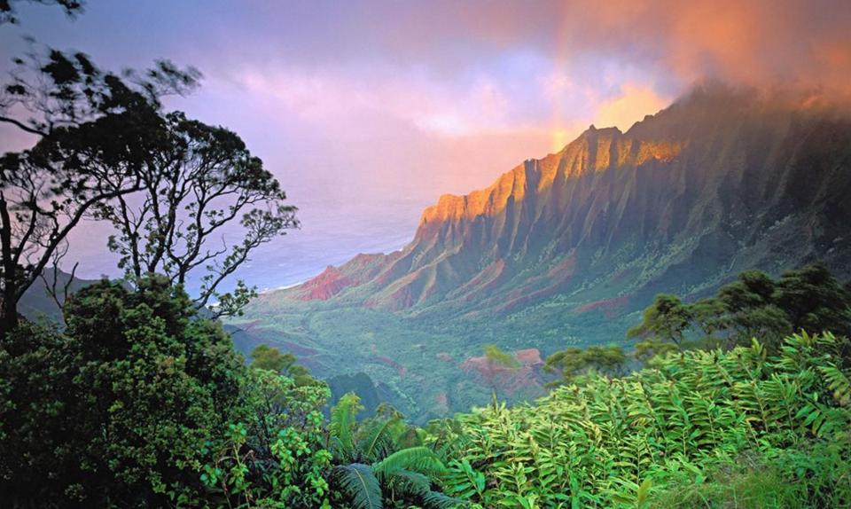
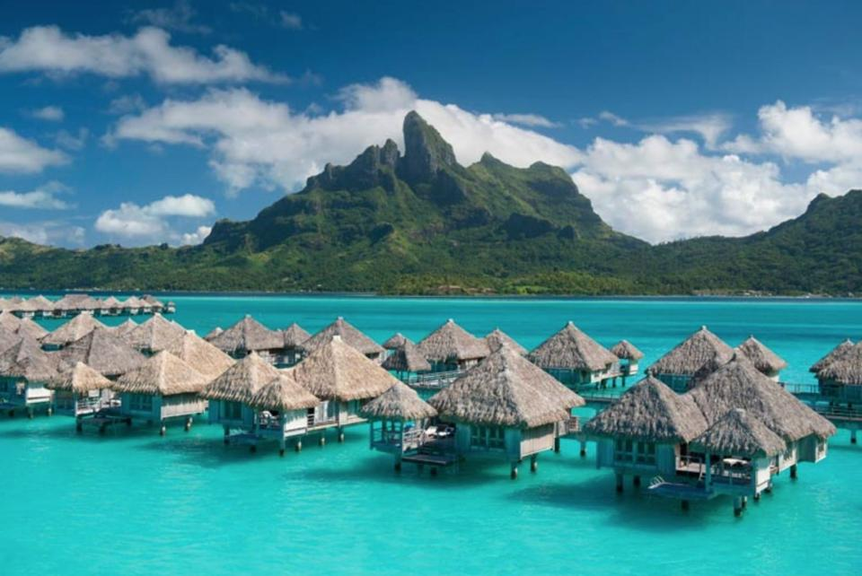

Victoria Falls
Victoria Falls that border Zambia and Zimbabwe is the largest waterfall in the world by total area. The falls transport an astonishing 1,088 cubic meters per second of water down an ~350 foot cliff.

The beautiful places below are organized into tropical/warm, arctic/cold, and architectural.
No matter where you live in the world, there are incredible places to visit and architectural sights to see.
To be honest, there are thousands of places that could have made this list but hopefully this list provides some justice to those that were left off.
Kauai, Hawaii owns the medal of the rainiest place on earth, allowing for a tropical paradise. Hike, swim, bike, and dive.
Bora Bora is an island that once was a volcano, which has subsequently subsided and formed a barrier reef. The reef ecosystem allows for pristine clear blue water and reefs limit waves, providing a protected sanctuary.
Longsheng is named after Longji, which translates to dragon's backbone. The terrace resembles dragon scales as rice fields snake through the mountains.
Victoria Falls that border Zambia and Zimbabwe is the largest waterfall in the world by total area. The falls transport an astonishing 1,088 cubic meters per second of water down an ~350 foot cliff.
The Amazon River is the artery for the largest rainforest in the world. It is the largest river in the world by discharge and one of the largest by length. The surrounding rainforest represents over half of the world's remaining rainforest.
The Rainbow Mountains of Zhangye Danxia, China show off weathering and erosion at it's most beautiful. The dramatic colors throughout the mountain are a result of trace minerals associated within the sandstone, coloring the sand in reds, greens, and yellows.

Railay, Thailand is a magical place only accessible by boat on a small Thai peninsula. Spend your day's rock climbing the limestone cliffs, exploring vast cave systems, or swimming to nearby islands.
Neuschwanstein, a nineteenth-century castle in southern Germany is the inspiration for Disneyland's Sleeping Beauty Castle. This German retreat is visited regularly during summer months as a symbol of refuge and peace.
The natural display of varying color within the arctic sky is one of Iceland's biggest tourist sights. Unfortunately, it's rather unpredictable so make sure you leave enough time to try a few times.
Antarctica is on average the coldest, windiest, driest, and highest continent. This desert continent is, however, home to millions of penguins of different species.
Yellowstone National Park is the oldest national park in the US and likely the world. Drive through the park and encounter an array of wildlife 10's of feet away from you.
Fjords are created by the slow erosion of mountain valleys as glaciers move down toward the sea. Tracy Arm Fjord in Alaska is home to Orcas and a rapidly disappearing environment.
Torres Del Paine in southern Patagonia is a national park that boasts beautiful mountains, glaciers, lakes, and rivers. Take the trip to southern Patagonia and you can hike the partial or full circuit around the stunning granite peaks in the backdrop of the photo above.
The island of Svalbard is located within the Arctic Ocean, north of mainland Europe. Svalbard is the northernmost settlement with a permanent population in the world. Trekking through Svalbard it's not uncommon to see polar bears, reindeer, and perhaps an Arctic fox.
The Temples of Bagan sit within central Burma (Myanmar) and was built as the capital of ancient Myanmar. The temples are the largest concentration of Buddhist temples, most of which dating back to the 12th and 11th centuries.
The ancient city of Petra, Jordan is an architectural masterpiece. Built into the side of a rock cliff, Petra was carved as early as 312 BC. Petra was names a UNESCO World Heritage Site and was unknown to the western world until 1812.
Hike up the mountain ridge where Machu Picchu sits and you will see the peak of Inca civilization. This beautiful place was built in 1450 and was only occupied for ~100 years until the Spanish Conquest.

Venice, the city on water, is built on 118 small islands that are separated by a vast network of canals. The city was built on the Venetian Lagoon and is unlike any other city in the world.
The Pyramid of Giza is one of the seven wonders of the ancient world, located in El Giza, Egypt. The pyramid was built as a tomb in 2560 BC for the Egyptian Pharaoh Khufu.
The ancient temple of Ta Prohm was built as a Buddhist monastery and university. The temple was largely left as is, with spung (Tetrameles nudiflora) trees and moss growing throughout the architecture.
The Taj Mahal in northern India is a beautiful white marble mausoleum. The Taj Mahal is regarded as the jewel of Muslim art in India and is an often sought after location for worship and tourism.

Andrej Tibenský is a geologist, forbes contributor, and adventurer. Feel free to email me. ☺